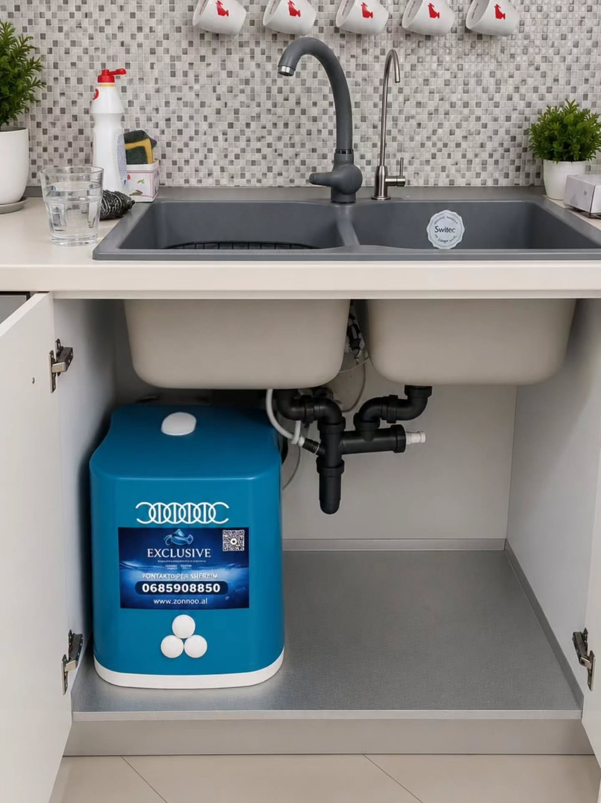

▤
Sediment
Faza paraprake për grimcat si rëra, balta dhe ndryshku që mund të vijnë nga tubacionet.
Osmoza e kundërt dhe fazat paraprake të filtrimit përdorin elemente të ndryshme. Zgjedhja dhe mirëmbajtja varen nga modeli dhe uji që trajtohet.
Si funksionon
Uji kalon nëpër çdo fazë dhe ndahet nga ndotësit. Shiko udhëtimin e tij.
Një shembull i sistemit RO
Konfigurimi ndryshon sipas pajisjes. Specialistët mund të konfirmojnë numrin dhe llojin e fishekëve për modelin tënd.
Faza paraprake për grimcat si rëra, balta dhe ndryshku që mund të vijnë nga tubacionet.
Përdoret për trajtimin e klorit, aromave dhe shijes së ujit, sipas fishekut dhe specifikimit.
Membrana e osmozës së kundërt është pjesë e sistemit të filtrimit për ujin e pijshëm.
Disa konfigurime përfshijnë fazë përfundimtare për shijen dhe përbërjen e ujit.
 OSMOZË E KUNDËRT
OSMOZË E KUNDËRTUjë për kuzhinën
Sistemet RO vendosen zakonisht pranë lavamanit dhe lidhen me një rubinet për ujin e filtruar. Para montimit, ekipi kontrollon hapësirën, lidhjet dhe përshtatshmërinë e pajisjes.

Kujdesi për filtrat
Jetëgjatësia e fishekëve varet nga tipi i filtrit, sasia e ujit dhe kushtet e përdorimit. Kontrollo rekomandimin e modelit ose kërko ndihmë nga ekipi.
Nuk je i sigurt për filtrin?